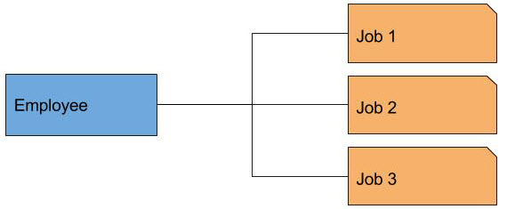
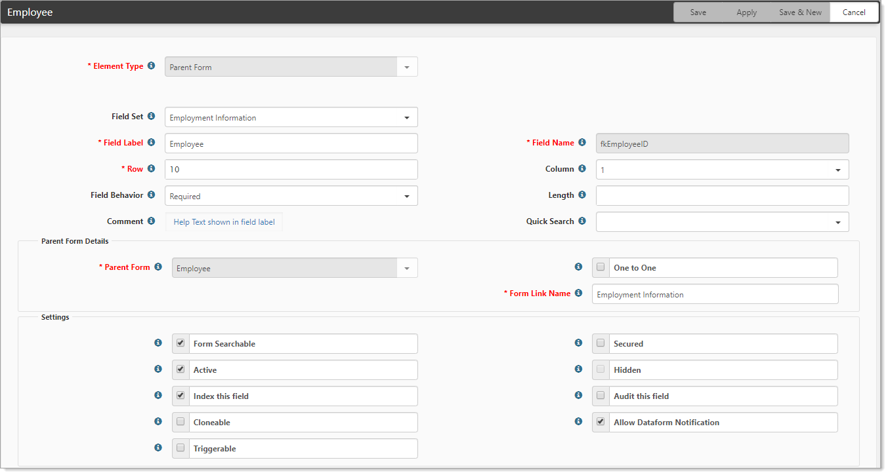

Parent-child relationships between dataforms allow you to build a fully relational structure to your

The employee’s employment history, however, is a different story. There are many reasons to historically track employment information. Take for example a theme park that terminates employees at the end of the season, then re-hires them at the beginning of the next season. By historically tracking this employment record, we can view an employee’s history, pay grade changes, and reasons for termination. The person is the same but the job changes.
In database administration, this is known as a One-to-Many relationship: one employee record, with many employment records. To take this a step further, each Employment record has multiple paycheck or voucher records associated with it and each voucher record can have multiple deduction records and so on. The ability to dynamically associate data together in a cohesive structure is one of the most powerful capabilities of the
Parent form fields are always added from the Child form. So, in our example, there would be an Employee field on the Employment record, an Employee Employment (Job) field on the Voucher record, and so on. This is important to understand when completing the setup of this relational datatype.
Let's use the Employee field and the following dataform as a guide.

To configure the Employment dataform:
Go to System Admin  > Advanced > Dataform Admin.
> Advanced > Dataform Admin.
The Dataform Admin dashboard opens.
Open Employment.
The Dataform Properties: Employment form opens.
In the Action Center, open Fields.
The Employment fields list displays.
Open Employee.
The Employee dataform opens.
| Field | Description |
|---|---|
| Element Type | Determines the type of data you store in this field. Parent Form is the default. |
| Field Set | A fieldset is a group of fields delineated by a box. You use a fieldset to organize fields. |
| Field Label | This value displays on the dataform, so Employee makes sense. |
| Field Name |
This is the column name for this field as it is stored in the database. On these parent form datatype fields, the system stores the ID of the parent form record. This is called a Foreign Key (when joining data tables together in these relationships, the primary ID of the record on another table is the foreign key of that record on the referencing table), so we would use a standard naming convention for this field of fk (foreign key) Employee (dataform name) ID or fkEmployeeID. As a best practice, use camel case for the Field name. Begin with lowercase to indicate datatype (such as fk for foreign key or lu for lookup). This is a best practice and makes the data easier to understand when you use this information in reports. |
| Row | Row property determines the vertical ordering of fields and fieldsets. Fields that are within a fieldset are ordered within that fieldset. A best practice is to set this in increments of ten, which allows for re-ordering fields or adding fields between rows without re-ordering the entire form. |
| Column | Column property is hard-coded to dictate a two-column format. |
| Field Behavior |
When ReadOnly is selected, the field cannot be edited. When Required is selected, the field must be completed before you can save the dataform unless the field is in a hidden fieldset. |
| Length | The maximum length of the field entry. This property is valid for text and integer data types. |
| Comment | Comments provide online help for dataform users. When comments are added to any dataform field, the info bubble is enabled and on hover, the info bubble displays the comment text in a pop-up. |
| Quick Search |
Select a value to add the field to the Quick Search on multiform searches: Starts With Equals Contains (% search) |
| Parent Form |
Dataforms can be related to each other in a parent-child relationship using the Parent Form data type. When this data type is selected, the related form fields are enabled (One to One and Form Link Name), allowing you to define the relationship. The Parent Form is selected from the list of all dataforms because the relational field is placed on the child form. Recursive relationships where a record is related to another record of the same dataform are supported. For example, a person dataform may be related to itself to represent the mother and father of the person. |
| One to One |
By default, One to One is enabled (selected). This means that each parent form can be related to only one child form. One-to-many relationships allow a parent form to relate to many children records. If One to One is enabled (selected), the link to the child form from the parent presents the child form directly. If One to One is cleared (not selected), this means you have a one-to-many relationship. The link to the child form from the parent presents a list of related records giving the user the option to edit an existing related record or add a new related record. |
| Form Link Name | Employment Information. This is what appears in the form link in the upper left of the Parent dataform. |
| Form Searchable | When selected, the form is one of the Search parameters in a multiform list. |
| Secured | When selected, the field is secured and generates a security entity for the field in the format of gen_TableName_FieldName. |
| Active | Determines if the field displays on the dataform. Deactivating a field is preferential to deleting it because deleting the field removes it from the underlying SQL table and erases the data. When you deactivate or hide a field, you retain the data for later use. |
| Hidden | Determines if the field and its children are hidden when a dataform record is viewed. |
| Index this field | When selected, the field is added to the SQL table index. Index this field makes searches based on this field faster. |
| Audit this field | Determines if the field is auditable. |
| Cloneable | Determines if the field is configurable when this dataform is created by Workflow and Email Templates. |
| Allow Dataform Notification | When selected, this field is included in a dataform notification when dataform subscribers are emailed. Updated fields appear in bold in this email. |
| Triggerable | Determines if this field is available for use as the Triggering Field or as one of the Triggering Conditions when configuring Workflow Channels and Email Templates |
The remainder of the setup for this dataform field is open to configuration on your part but notice that fkEmployeeID is a required field on this form. You cannot have an employment record without an attached employee, so the field is required. Careful planning before adding fields to a dataform saves a lot of cleanup of bad data down the road.